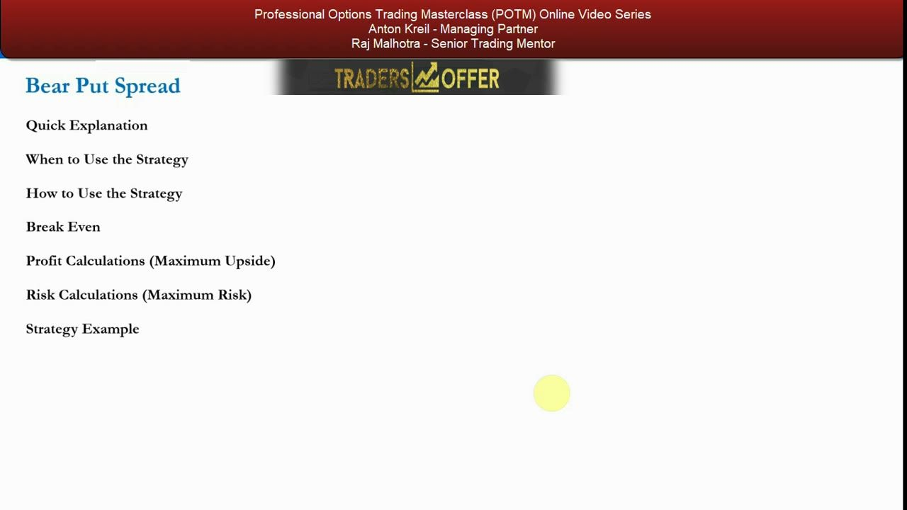
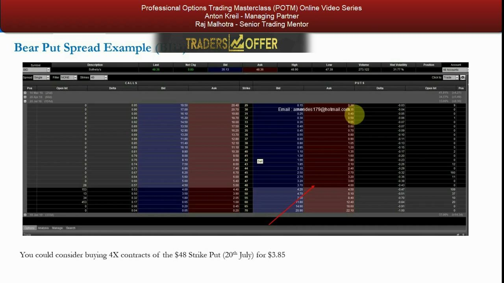
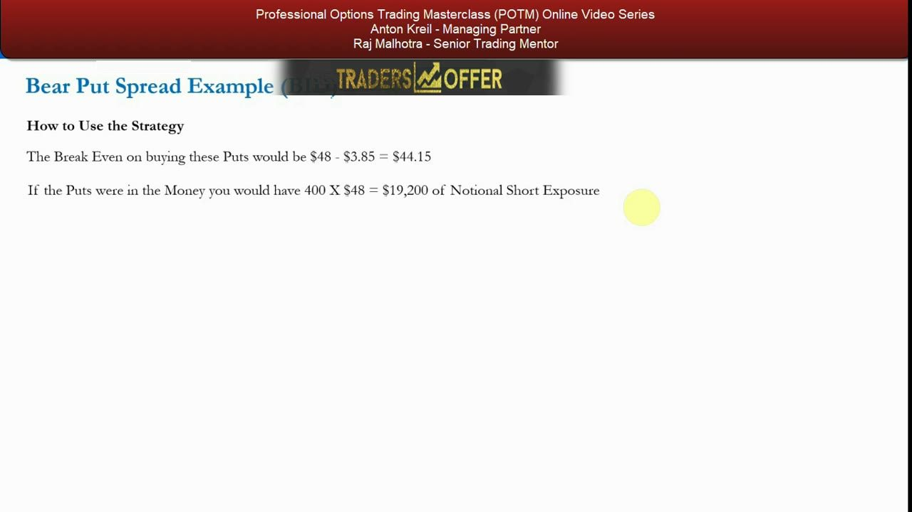
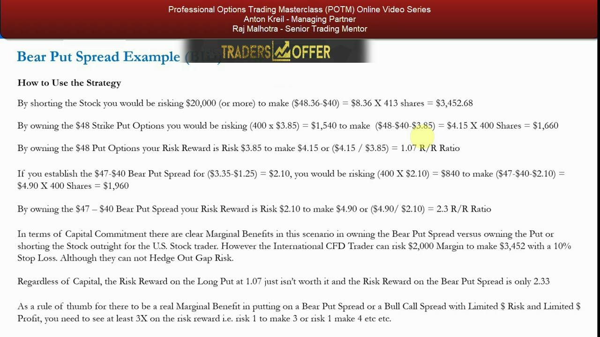
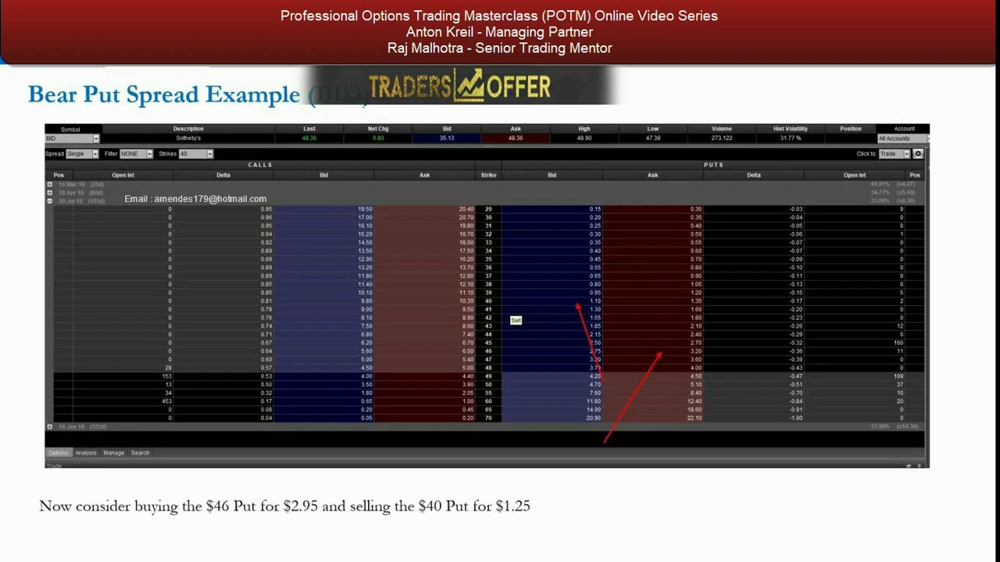

Options Spreads 2 — The Bear Put Spread
The bearish mirror of the bull call spread: buy a higher-strike put, sell a lower-strike put, cap your profit, cheapen your bet.
The bear put spread is a limited-risk, limited-profit directional short — a cheaper alternative to a naked long put where the written lower put subsidises the cost. This lesson formalises the formulas and then walks a live Sotheby's (BID) chain where Anton refuses all four candidate trades because none clears his 3× risk/reward rule of thumb.
The gist
- Bear Put Spread = BUY a higher-strike put + SELL a lower-strike put, same expiry → a net DEBIT trade. It is the exact bearish mirror of the bull call spread.
- Profile: Directional · Bearish · 2 transactions · limited maximum risk · limited maximum gain.
- Formulas — Max Risk = net debit paid; Max Gain = (strike width − net debit); Break Even = higher (long) put strike − net debit; maximum profit is reached AT the short/lower strike and you make nothing more below it.
- It is a cheaper alternative to a naked long put: the written lower-strike put offsets part of the cost, but the trade-off is that your dollar profit is CAPPED at the short strike.
- The key decision is strike selection — the short/lower strike is the floor you must genuinely believe the stock will not break by expiry.
- The ≥3× risk/reward rule of thumb: demand risk 1 to make 3 (or 4, or 5). It is a rule of thumb, not hard-and-fast, but the discipline kills boredom trades.
- Sotheby's (BID) example, 16 Feb 2018: spot $48.36, Hist Vol 31.77%, 20 Jul 2018 expiry (151 days), ~$20,000 exposure = 4 contracts / 400 shares; thesis is the stock breaks $46 but holds above $40.
- The four candidates and their R/R — short stock (~$3,452.68 upside vs $20,000+ risk), $48 long put (R/R 1.07), $47/$40 spread (R/R 2.33), $46/$40 spread (R/R 2.53) — even the best FAILS the ≥3× rule, so Anton REFUSES all four. Refusing a mediocre trade is the correct outcome.
The agenda: formalising the bear put spread
- Introduced at the index level in video 11; here it is revisited and formalised with a specific stock example.
- The lesson walks the standard sequence: quick explanation → when to use → how to use → break even → profit (max upside) → risk (max risk) → strategy example.
- As always, it is learning-by-doing: the formalised formula lives in the useful PDF; the video works a real market example.
The bear put spread is one of the most useful retail strategies precisely because it is simple: two transactions and risk limited to the premium you pay.

What it is — the bearish mirror of the bull call spread
- A bearish directional bet built from put options: BUY a higher-strike put and SELL a lower-strike put with the same expiry.
- The long put you buy is nearer the money and more expensive; the short put you sell is further out and cheaper — so the net effect is a DEBIT, but a reduced one versus a naked long put.
- It is used when you expect the underlying to fall into a certain range by expiry, but no lower than a certain level.
Writing the lower-strike put offsets part of the cost of the higher-strike put, which also reduces the effect of time decay on the position — at the cost of capping the dollar profit.
The parameters and when to use it
- Directional · Bearish · 2 transactions · Debit trade · Maximum risk limited · Maximum gain limited.
- Use it when you are bearish the underlying and expect it to fall, but NOT below a certain level by expiry.
- Two configurations: buy an at-the-money put + sell a lower-strike put (moderate fall), or buy an out-of-the-money put ~3–5% OTM + sell a lower-strike put (aggressive fall expected).
There must always be a marginal benefit versus simply shorting stock or buying a straight put — driven by a risk/reward analysis of the fundamentals plus capital considerations.
Why it ranks HIGH in usefulness
- The dollar upside is limited, but so is the dollar risk — you can never lose more than the net debit paid.
- By contrast, shorting stock carries theoretically unlimited (infinity) dollar downside plus gap and margin-call risk.
- It is a simple, clean directional bet — exactly the exposure you want to get marginal benefit.
You know at the point of entry exactly how much you stand to lose and exactly how much you stand to make — which is why, like the bull call spread, it is popular with all traders.
Where the maximum profit lives
- You make money two ways: the long puts gain as the stock falls, and the written puts decay in your favour.
- Maximum profit is reached AT the lower/short strike — if the stock keeps falling below it, the written contracts move into a loss that exactly offsets further gains on the long puts.
- Below the short strike you make no further profit; it costs you nothing extra, it just caps the reward.
If the stock never falls below the break-even, both legs expire worthless and you lose the net debit (or a portion of it) — but never more than the full debit.
Secondary use — a cheaper hedge for long stock
- Buy an at-the-money or slightly OTM put and sell a lower-strike put to lower the cost of a simple long-put hedge on a long stock position.
- In a black-swan sell-off you avoid losses on the stock and gain ammunition to buy more into the technical sell-off — if the fundamentals have not changed.
- Especially valuable for long-term holders (e.g. pension holdings) protecting against prolonged, large declines — a cheaper hedge than buying puts outright.
The dollar upside on the hedge is still capped, but for long-term holders the ability to hedge cheaply adds significant portfolio value over a lifetime.
The Sotheby's (BID) thesis and the option chain
- 16 Feb 2018: fundamentally bearish on Sotheby's (BID) — Chinese fine-art demand and emerging-market luxury-property demand both expected to fall off a cliff over the next six months.
- Spot last $48.36 · Hist Volatility 31.77% · 20 Jul 2018 expiry = 151 days to expiry.
- Level thesis: the stock breaks $46 but does NOT go below $40 by end of July.
- Target ~$20,000 exposure = 400 X $48 notional = 4 contracts / 400 shares.
- Put chain: 40 strike 1.10/1.35 · 46 strike 2.75/3.20 · 47 strike 3.20/3.60 · 48 strike 3.70/4.00.
There are multiple ways to play a bearish view; the chain lets you compare shorting stock, buying a straight put, and structuring a bear put spread — reading up and down the ladder for where the marginal benefit lies.

The naked long put — break even and notional
- Buy 4X the at-the-money $48 strike put (20th July) for $3.85 (bid 3.70 / offer 4.00 — pay the $3.85 mid).
- Break Even = $48 − $3.85 = $44.15.
- If the puts were in the money you would have 400 X $48 = $19,200 of notional short exposure.
- The stock has to move down by the full $3.85 before you get paid — a big move, so the break-even is unattractive.
That $44.15 break-even is worse than the spread's, which motivates writing a lower put to raise the break-even and cheapen the trade.

The $47/$40 bear put spread and the $46/$40 legs
- $47/$40 spread: buy 4X the $47 put for $3.35 (bid 3.20 / offer 3.60) and sell the $40 put for $1.25 (bid 1.10 / offer 1.35) → net debit $3.35 − $1.25 = $2.10.
- $47/$40 Break Even = $47 − $3.35 − ... = $44.90 — HIGHER (better) than the $48 put's $44.15, so the stock has to fall less before you profit.
- $46/$40 spread: buy the $46 put for $2.95 and sell the $40 put for $1.25 → net debit $1.70.
- The lower/short $40 strike is the floor you must genuinely believe the stock will not break by expiry.
Selling the $40 put lowers your cost AND raises the break-even — but only makes sense if you truly believe the stock won't fall below $40; otherwise you have lowered your reward for nothing.
The risk/reward showdown — all four candidates
- Short stock: risk $20,000 (or more, stock can go to infinity) to make ($48.36 − $40) = $8.36 X 413 shares = $3,452.68.
- $48 long put: risk (400 X $3.85) = $1,540 to make ($48 − $40 − $3.85) = $4.15 X 400 = $1,660 → R/R Risk $3.85 to make $4.15 = 1.07.
- $47/$40 spread: net debit $2.10, risk (400 X $2.10) = $840 to make ($47 − $40 − $2.10) = $4.90 X 400 = $1,960 → R/R Risk $2.10 to make $4.90 = 2.33.
- $46/$40 spread: net debit $1.70, risk $680 to make $4.30 X 400 = $1,720 → R/R Risk $1.70 to make $4.30 = 2.53.
- International CFD trader can risk $2,000 margin to make $3,452 with a 10% stop — but cannot hedge out gap risk.
The bear put spread beats both shorting stock and buying the straight put on capital and risk profile — but the absolute risk/reward number still has to clear the bar.

The verdict — refuse all four
- As a rule of thumb, a bear put spread (or bull call spread) with limited $ risk and limited $ profit needs at least 3X on the risk/reward — risk 1 to make 3, or 4, or 5.
- Best of the four is the $46/$40 spread at 2.53 — and it still fails the ≥3× rule; short stock, the $48 put (1.07) and the $47/$40 spread (2.33) all fail too.
- So Anton REFUSES all four trades — even though the spread has a real marginal benefit over shorting or buying a put.
- Execution prices on spreads matter enormously; a few cents changes the R/R and whether a trade is worth doing.
- There are much better trades in the market; refusing a mediocre one is the correct outcome and the whole point of the exercise.
The 3× rule is a discipline, not a hard-and-fast law — slightly less might still be worth it — but sticking to it eliminates boredom trades and forces you to hunt for genuine marginal benefit.

Glossary
- Bear Put SpreadA bearish, limited-risk/limited-profit debit strategy: buy a higher-strike put and sell a lower-strike put with the same expiry. The bearish mirror of the bull call spread.
- Net DebitThe net premium paid to establish the spread = premium of the long (higher-strike) put minus premium received on the short (lower-strike) put. It equals the maximum risk.
- Maximum RiskThe most you can lose = the net debit paid. Realised if the stock stays above the break-even and both legs expire worthless.
- Maximum GainThe most you can make = (strike width − net debit) X shares. Reached at or below the short/lower strike; capped there.
- Break EvenThe underlying price at which the spread starts to profit = higher (long) put strike − net debit. In the example, $47 − $2.10 = $44.90.
- Short/Lower StrikeThe strike of the put you write — the floor you must genuinely believe the stock will not break by expiry. Below it, no further profit is made.
- 3× Risk/Reward RuleAnton's rule of thumb: demand at least risk 1 to make 3 before putting on a spread. A discipline, not a hard-and-fast rule, that eliminates boredom trades.
- Gap RiskThe risk of an overnight jump (e.g. a takeover announcement) while the market is closed, which cannot be hedged out when short stock via a stop loss.
- Historical VolatilityRealised volatility of the underlying; Sotheby's (BID) shows Hist Volatility 31.77% on the 16 Feb 2018 chain.